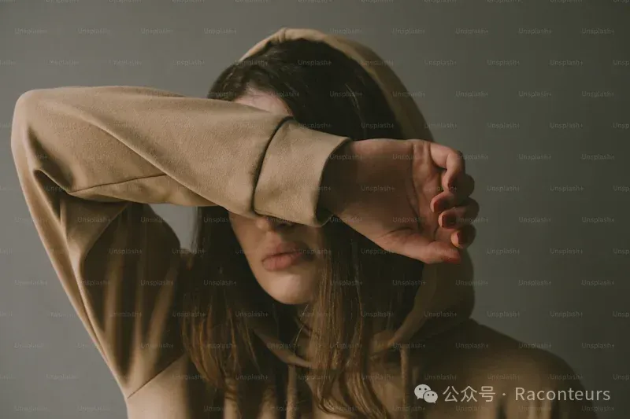
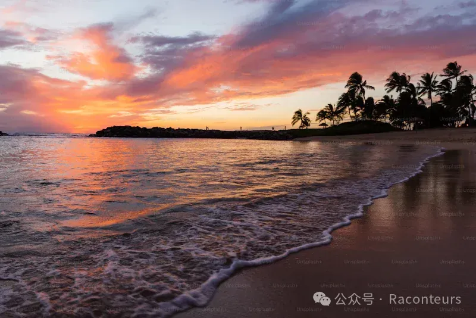
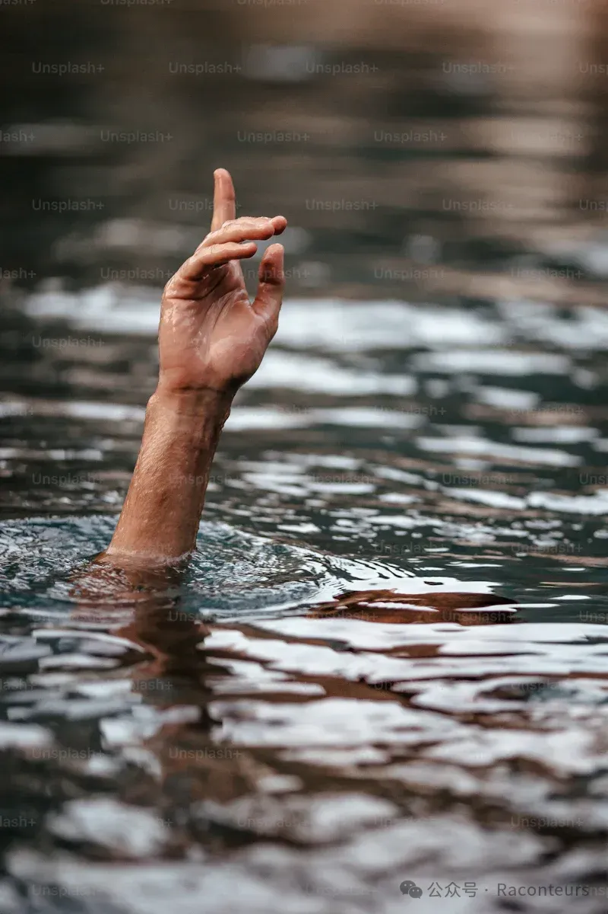

From a young age, I have not been an ordinary person, or rather, a healthy one.
Why describe myself in this way? This kind of "ordinary" is not a compliment. At the age of three, a pot of boiling water suddenly splashed onto my body, the scalding liquid smoking as it poured down from my shoulder. Since then, the memory of that boiling water has been forever searing, and my early childhood is a blur of details, with only the thick scars and the unforgettable pain serving as a constant reminder.
I only remember the smoke rising from my entire body as I ran through the crowd, and the cries that pierced my entire third year of life. The body with burns was tinged with green marks in my memory. Even though I was fortunate to survive the scalding accident with a 70% survival rate, my body was unfortunately left with indelible scars. Those unsightly, irregular scars have become a part of me, imprinted on my arms, stomach, back, and even my entire upper body.
For most of the time, I live a life that is no less happy than that of a normal child, or even more so. Due to my family background, I am the spotlight just by standing there, even though I have always been ordinary, even with the terrifying scars on my body. But I am lucky; from a young age, I was a child wrapped in love, traveling to the corners of the world, watching snow-capped mountains in Vancouver in December, flying over the Grand Canyon in Las Vegas in a helicopter, riding a hot air balloon in Orlando, walking through Peru in South America, the volcanoes of Honolulu... Among these, I like the sea the most; it always brings me a kind of unreal freedom, which is also the origin of my pen name. Because of this, I never thought that my body was a flaw, or rather, the happiness that this vast world brings me makes me temporarily forget their existence.
But as I grow up, I become more sensitive. I am afraid of the scrutiny of all strange eyes, afraid that those terrifying scars on my arms will become more ferocious and eventually become my difference from others. I see the friends around me all start to have their own personalities, confident and unrestrained, I do not speak, just secretly envy their freedom in wearing tank tops in summer, I even looked forward to those ugly scars can be repaired through medical beauty. Because the people around me are very confident, I also started to take photos and send them out, my family even thought I was very confident, but in fact, I am not, I dare not wear those bikini swimsuits like my peers; wear a backless long skirt, I still pretend to be very confident, trying to retaliate and integrate into the group I envy.
To be honest, I have never experienced extreme physical humiliation, and there is no so-called extreme treatment for physical defects in the environment I have grown up in since I was a child. I am very lucky, the people around me are understanding and gentle, and those terrifying scars have never been deliberately mentioned. It's just that I am too sensitive, occasionally someone mentions the origin of these strange scars, I always say it's just a burn on the surface; standing in a corner of the fitting room, feeling lost and lonely, only secretly covering the scarred arm; when someone accidentally touches the wound, I will habitually frown and dodge, I know, because of these scars, this seemingly happy girl has never been truly confident.
I have been tossed and turned, and I met Doctor Fish when I came to Canada. He rarely sees children with such severe burns, so I became a test case. I remember when I was young, he would give me his own bracelet, but due to the epidemic, I haven't been back to Canada for five years.
Until 2023, I stepped into this familiar hospital again. From childhood, my aversion to hospitals and the smell of disinfectant even exceeded the stinky tofu, I always dare not look at those cold machinery and the desolate faces of the people. But apart from this hospital, in my memory, there is a shop in this hospital selling chocolate, candy, and vacation hats, the smell of disinfectant is mild and not irritating, the walls are warm yellow, just like the light; my doctor is wearing a clean white coat, he has very deep wrinkles, like the annual rings of the camphor tree at the door; each clinic has dolls and toys like at home.
But it is a pity that at the age of sixteen, I can no longer truly repair these scars, they must become a part of my life. In an instant, the belief I have been fantasizing about has collapsed, I don't want to cry in front of Doctor Fish whom I haven't seen for five years, but my eyes are filled with thick tears, due to the swollen pain, tears unconsciously seep out from the corners of my eyes. After that day, every night, I often can't sleep, and tears seep out when I close my eyes, it is fear and despair. I know, I am desperate for not only the body that cannot be cured, but also the most real self hidden in the corners, the fragmented, unconfident self.
After that day, Doctor Fish brought a young psychologist, she did not speak, quietly listening to my crying, in the empty room only her and I. She knows my disgust for those scars, even if it has never been obvious, it will still be disappointed. "We have to move on, I suggest you join a former burns organization to encourage those desperate girls to become confident and have a consensus with them that more communication will make you better. Child, this is an opportunity for redemption, to help that self that was once not confident." I saw those girls with burns on Instagram, girls with broken arms, their faces full of brilliant smiles, the sun shines on their faces, white teeth shining in the lens, they are confident and charming. Colorful handprints on the white canvas, it is the color of freedom.
This is also the first time, I saw another side, also not ordinary, but a scorching soul. Today, the person who stands here to tell the story, she tells her other side, with scars; and the other side she sees in the mirror reflection, the scorching side under the scars on the mobile phone screen.
Why suddenly update my public account, it has been so long, the things of 2023 still make me feel caught off guard, this year is so busy that I hardly have time to touch my bear. Until recently, someone told me that what I wrote is very touching, I was very happy that day, before that I always thought the most loyal reader was only myself, in fact, I have always been a very contradictory person, contradictory to the point of being afraid of those strange, irregular words being seen by others, among which there are my scars, as well as pride; and secretly glad to be read by the right person. Ah, I really want to keep writing, let those inspirations continuously turn into words and strength, to dilute the fatigue that seems to be born with me.
Why suddenly update my public account, it has been so long, the things of 2023 still make me feel caught off guard, this year is so busy that I hardly have time to touch my bear. Until recently, someone told me that what I wrote is very touching, I was very happy that day, before that I always thought the most loyal reader was only myself, in fact, I have always been a very contradictory person, contradictory to the point of being afraid of those strange, irregular words being seen by others, among which there are my scars, as well as pride; and secretly glad to be read by the right person. Ah, I really want to keep writing, let those inspirations continuously turn into words and strength, to dilute the fatigue that seems to be born with me.
Finally, quote a sentence I saw recently and like very much: "The meaning of recording is to let happiness turn the page."